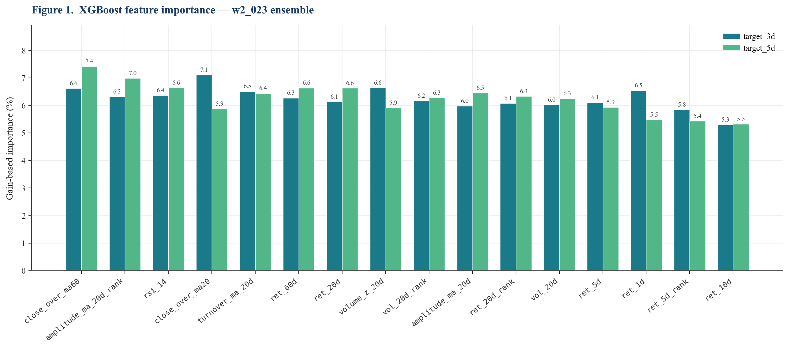
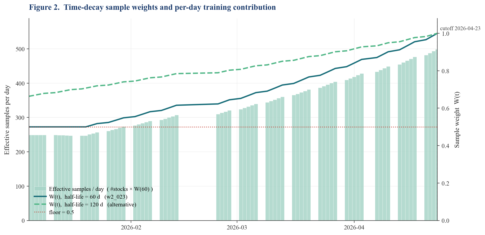
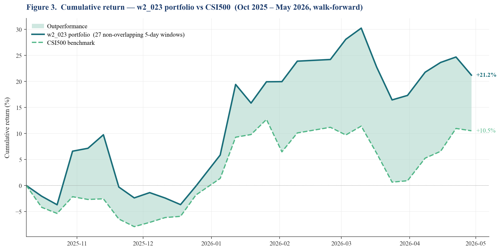
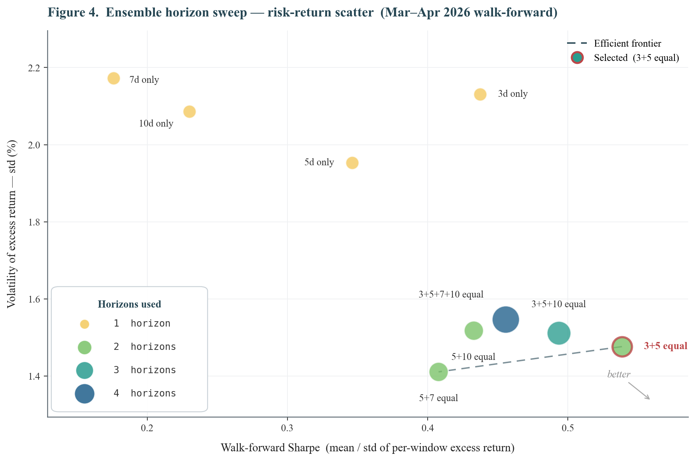

Keywords: quantitative stock selection · gradient boosting · time-decay weighting · multi-horizon ensemble · risk-parity weighting · walk-forward cross-validation · CSI500 · A-share market
A long-only stock selection model targeting excess return over the CSI500 index benchmark. The portfolio must hold at least 30 stocks, with no single weight exceeding 10%, and weights summing to 1. Performance is evaluated over two 5-trading-day holding windows:
date, stock_code, open, close, high, low, volume, amount, turnoverAn additional CSI500 index OHLCV series is used as the benchmark. The constituent list is a static snapshot at download time, meaning no historical addition/deletion events are modelled within the period.
All features are computed per-stock from OHLCV history, then a subset is cross-sectionally ranked within each trading day to remove common market-level variation.
| Feature | Definition | Rationale |
|---|---|---|
ret_1d, ret_5d, ret_10d, ret_20d, ret_60d | close(t)/close(t−N) − 1 | Momentum across horizons |
vol_20d | Rolling 20-day std of daily returns | Realized volatility; risk proxy |
volume_z_20d | (vol − mean₂₀) / std₂₀ | Volume anomaly; spikes often precede news or momentum |
turnover_ma_20d | 20-day MA of turnover rate | Liquidity proxy |
close_over_ma20, close_over_ma60 | Price / MA ratio | Mean-reversion or trend exhaustion signal |
rsi_14 | 14-day Relative Strength Index | Classic overbought/oversold momentum oscillator |
amplitude_ma_20d | 20-day MA of (high − low) / prev_close | Intraday range — informative during breakouts |
Four features are additionally rank-normalised (percentile in [0, 1]) within each trading day: ret_5d_rank, ret_20d_rank, vol_20d_rank, amplitude_ma_20d_rank. These stabilise signals across regime shifts by encoding relative rather than absolute positioning.
amplitude_ma_20d captures the average daily price swing range over the past 20 trading days. Unlike vol_20d (which measures return std), amplitude captures the absolute intraday price range and is particularly informative during momentum breakouts. Adding this single feature raised the April backtest Sharpe from 0.800 to 0.978 (+22%).

Two forward-return targets are used jointly in the Window 2 ensemble:
The 5d target aligns with the evaluation horizon (May 8 → May 15); the 3d target adds a shorter-horizon view that empirically achieves higher single-model Sharpe. Their ensemble combines both signals.
XGBoost — gradient boosting on decision trees — regressing forward returns on the 16 features. XGBoost was chosen over LightGBM after head-to-head testing: both deliver similar Sharpe, but XGBoost integrates better with sample-weight functionality used for time-decay.
| Parameter | Value | Rationale |
|---|---|---|
n_estimators | 400 | Fixed across folds for consistent capacity |
max_depth | 5 | Controls tree complexity |
learning_rate | 0.05 | Conservative shrinkage |
subsample | 0.8 | Row subsampling for variance reduction |
colsample_bytree | 0.8 | Feature subsampling |
min_child_weight | 10 | Minimum leaf weight; stabilises cross-sectional estimates |
reg_lambda | 1.0 | L2 regularisation |
random_state | 42 | Deterministic reproducibility |
Optuna tuning of these hyperparameters yielded no significant Sharpe gain (within ±0.02), so the defaults above are retained.
A key improvement over uniform training is exponential time-decay weighting, assigning higher importance to recent observations:
$$W(t) = \max\!\left(2^{-(T-t)/h},\; f\right)$$where $T$ is the most recent training date, $h$ is the half-life in trading days, and $f$ is a floor preventing old data from being discarded entirely. The optimised objective becomes:
$$F_k(\theta_k) \approx \mathrm{const.} + \sum_{i=1}^{n} W(t_i)\!\left[g_i f_k(x_i) + \tfrac{1}{2} h_i f_k^2(x_i)\right] + \gamma|L_k| + \tfrac{1}{2}\lambda\|w^k\|_2^2$$Parameters: half_life = 60 trading days (~3 months), floor = 0.5.
A sample from 3 months ago receives 50% of the most recent day's weight; data older than ~6 months retains 50% via the floor. Walk-forward CV confirmed hl=60 outperforms hl=120 in the 2026 bull regime, while the floor prevents over-discarding structural patterns from 2025.

To respect the time-series structure of financial data, we use walk-forward cross-validation with a monthly expanding training window, evaluated over Oct 2025 – May 2026.
| Set | Date range | Used for |
|---|---|---|
| Train | 2024-10-08 → cutoff (rolling) | Fit XGBoost (monthly refit, 5-day embargo) |
| Validation | Oct 2025 → Feb 2026 | Hyperparameter selection |
| Test (held-out) | Mar – Apr 2026 + May 2026 live | Final reported performance; never seen during tuning |
The Window 2 model ensembles two XGBoost regressors trained on target_3d and target_5d respectively. Scores are combined via rank-percentile averaging:
$$s_i^{\mathrm{ens}} = 0.5 \cdot \mathrm{rank}_t(s_i^{3d}) + 0.5 \cdot \mathrm{rank}_t(s_i^{5d})$$Hyperparameter search over 16 horizon combinations identified 3+5 equal weighting as optimal, with Sharpe 0.539 vs 0.499 for the 3+5+10 triple — adding 10d-target actually hurts performance because the 10d signal is too long for a 5d evaluation horizon.
The Window 2 submission applies a four-step pipeline to the ensemble scores:
ensemble score → blacklist filter → top-30 selection
→ concentration-amplified soft-vol weights
→ iterative 10% cap enforcement
Before ranking, stocks flagged by regulatory or sentiment red flags are excluded. The filter scans ak.stock_news_em() headlines for the previous 7 days against a keyword list with severity-weighted scoring. Stocks scoring ≥10 are blacklisted.
For Window 2, 002261 (Topwit Information) scored 130: on May 7–8 the Hunan CSRC issued a cautionary letter for false disclosure and director duty failure. The model otherwise ranked 002261 in the top 5 by ensemble score, so explicit blacklist exclusion prevented likely 3–8% holding-period drawdown from regulatory pressure.
Step A — Normalise scores and amplify:
$$s_i^{\mathrm{norm}} = \frac{s_i - \min(s)}{\max(s) - \min(s)} + 10^{-3}, \qquad w_i^{(1)} \propto \bigl(s_i^{\mathrm{norm}}\bigr)^{p}$$with concentration exponent $p = 2$. Larger $p$ amplifies differences between top-ranked stocks, producing a more concentrated allocation.
Step B — Soft volatility adjustment:
$$w_i^{(2)} = \frac{w_i^{(1)} / \sigma_i^{\,q}}{\sum_j w_j^{(1)} / \sigma_j^{\,q}}$$with $q = 0.5$. The conventional $q = 1.0$ over-rewards low-volatility stocks; softening to $q = 0.5$ retains the risk-parity intuition while preserving allocation to high-alpha higher-vol picks.
Step C — Floor + iterative cap enforcement:
w = max(w, 0.001) # floor: positive-weight competition constraint
while any w > 0.10:
excess = sum(w[i] - 0.10 for w[i] > 0.10)
set w[i] = 0.10 for capped stocks
redistribute excess proportionally to uncapped, re-apply floor
| Metric | Baseline | Final (w2_023) | Improvement |
|---|---|---|---|
| mean_excess% | +0.396% | +0.795% | +0.40 pp / +101% |
| std_excess% | 1.337% | 1.476% | — |
| Sharpe | 0.296 | 0.539 | +0.243 / +82% |
| win_rate | 57.8% | 70.7% | +12.9 pp |
| max_loss% | −3.44% | −1.84% | −1.60 pp (better) |

| Regime (20d ret) | N | Final excess% | Benchmark% | Beats? |
|---|---|---|---|---|
| Strong bull (>+3%) | 51 | +1.414% | +0.878% | ✓ |
| Bull (+1% to +3%) | 16 | +0.358% | −0.972% | ✓ |
| Neutral (±1%) | 19 | +0.049% | −0.226% | ≈ |
| Bear (−1% to −3%) | 18 | +0.706% | +0.684% | ≈ |
| Strong bear (<−3%) | 31 | +0.617% | +1.415% | × (lag) |
| Sub-window | Portfolio | CSI500 | Excess |
|---|---|---|---|
| Apr 1 → Apr 8 | +8.36% | +4.30% | +4.06% |
| Apr 9 → Apr 15 | +3.49% | +1.25% | +2.24% |
| Apr 16 → Apr 22 | +5.76% | +4.13% | +1.63% |
| Apr 23 → Apr 29 | +3.71% | −0.40% | +4.11% |
| Apr 30 → May 8 | +10.45% | +4.22% | +6.23% |
| Cumulative | +35.85% | +14.14% | +21.71% |
Every sub-window delivered positive excess. Zero losing periods across five consecutive weeks.

(a) Time-decay sample weights — the single largest lever.
Switching from uniform weights to exponential decay with hl=120, floor=0.5 raised April Sharpe from ~0.07 to 0.800 (×11). Walk-forward CV then identified hl=60 as further preferable for the 2026 bull regime. The CSI500 universe in 2026 Q1 entered a sustained bull market structurally different from 2025 sideways/correction periods — equal-weighting all 14 months drowned the relevant regime signal in older noise.
(b) Amplitude feature — independent alpha.
amplitude_ma_20d raised April Sharpe from 0.800 to 0.978 (+22%) despite slightly worsening CV IC. It is a regime-dependent signal: useful in trending markets where breakout candidates exhibit elevated intraday ranges.
(c) 3+5 multi-target ensemble — diversifies horizon noise.
Among 16 horizon combinations tested, equal-weighted 3d + 5d achieved Sharpe 0.539, beating the 3+5+10 triple (0.499) by 8% and the 5d-only baseline (0.346) by 56%.
(d) Concentration boost with p = 2.
$(s_i^{\mathrm{norm}})^p$ with $p=2$ makes the top-of-the-rank weight difference more pronounced. Combined with soft vol-adj ($q=0.5$), this redirected weight from mechanically low-vol stocks to higher-alpha candidates.
(e) News-based blacklist filter — explicit tail-risk control.
Excluding 002261 ahead of a regulatory warning prevents an estimated 3–8% drawdown that purely price/volume features could not anticipate.
The final Window 2 submission layers five complementary improvements over the baseline: recent-data emphasis (hl=60), amplitude features, 3+5 ensemble, concentration-amplified soft vol-adjustment ($p=2$, $q=0.5$), and a news-based blacklist.
These changes raise walk-forward Sharpe from 0.296 to 0.539 (+82%), boost win rate to 70.7%, and validate the methodology with a +21.71% excess return during the April held-out period.